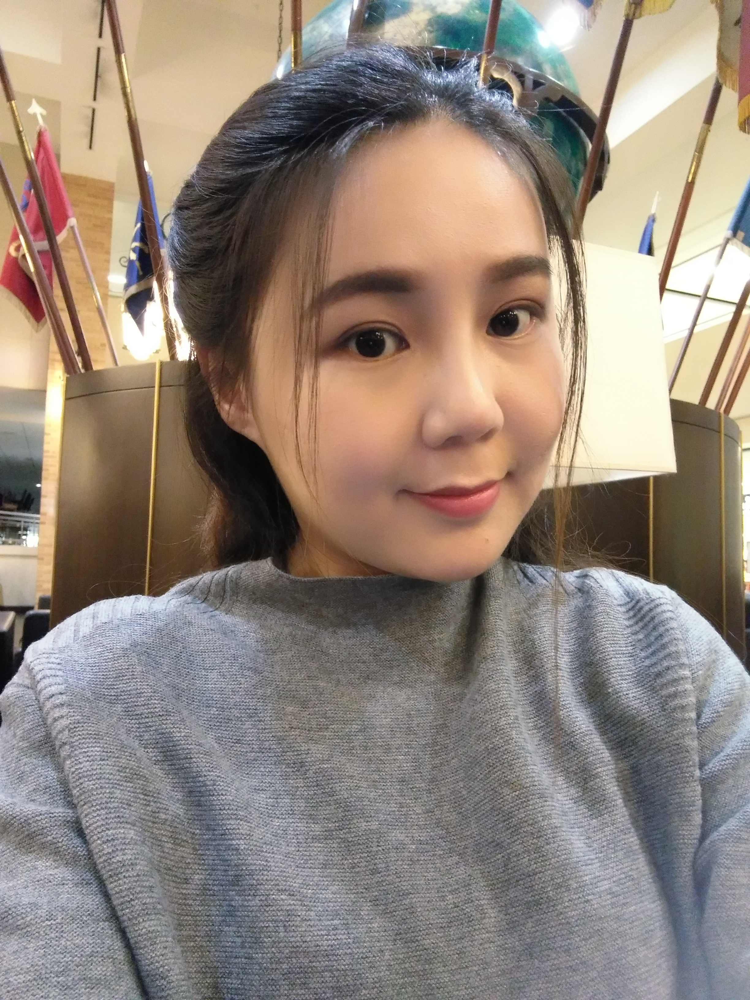

My Story

In the photo, they are my mother, my mother-in-law, my father-in-law and my husband.
My heritage is diverse. My father is a businessman, but his career is a full adventure. He runs a leisure center, so he has a good aesthetic feeling. He was so smart, but he made so many wrong decisions in his career. When I was 20 years old, he separated from my mom because of his failed career life, and he was so ashamed and left away from our life. He died July 14th, 2021 and I was so sad during that time, and I cannot come back to China because of COVID-19.
My mom was a housewife at the beginning, but she was so clever for her father was a well-reputation professor, so she had good genes in speaking, selling, and teaching. She was good at studying new knowledge, so she spent her time studying financial knowledge. In the end, she became a good insurance agent. She also got married again to my stepfather.
From my childhood, I had talents in studying drawing, calligraphy, and public speaking in my Chinese school because I had my father and my mother’s genes. When I choose my major in the university, my uncle suggested that I should study Chinese Language and Literature for it is so easy for me.
Resume

My Favorate words
Your vision will become clear only when you look into your heart.
Who looks outside, dreams.
Who looks inside, awakens.
- Carl Jung
Resume content
2017-2018
Educational Consultant
TAMU Chinese School, College Station, Texas
My duties include promoting students to choose suitable courses, inspecting new students who want to study and designing advertisements and posted on websites, etc.
2013-2016
Educational Consultant
YouZhijingcheng Edu & Tech Ltd. Xi’an, China
My working responsibilities are promoting students to choose suitable courses, forecasting educational operation costs, assisting account teams with the development of annual budgets, fundraising plans, and cash flow projections, etc.
2011-2013
Copywiter
Xiagu Top Fashion Photography Studio, Ningbo, Zhejiang, China
My duties are writing the advertisement text, supported social media, and synthesized and communicated business strategies, etc.
2010-2011
Copywiter
Pretty Nyonya Boutique Ltd., Shenzhen, China
My responsibilities are assisting in providing strategic insight and recommendations in the market, creating advertisement content and inventive solutions that uphold the brand, and creating website content, blogs, and media reports, etc
2009-2010
Copy Editor
Shaanxi Travel Press Ltd. , Xi’an, Shaanxi, China
My duties are gathering, analyzing, writing original descriptive copy as assigned. Besides, I also review and edit existing documents and collateral.
My Job
After I graduated from my university, I did all jobs based on my Chinese field. However, I want to try some new things and find a good job with a high salary. I change my position from editor to copywriter to educational consultant.
In the end, I find the educational field is good, but I need to get a higher degree to enter a good college or university, so I spend so much time studying English and applying for an overseas university.
In my body, I want to be a good teacher as the same with my grandfather, while I sometimes wish to be a powerful woman in the business field. All in all, I find that I was so great in the educational field.
Copywriter
Educational Consultant
Designer
My Hobby
Travel
Design
Shopping
I like shopping, cooking, traveling, writing, and Design, etc. Some of my hobbies can be used for earning money.
I would like to share my traveling experience at first. I have been traveled in Ontario, Korea, Singapore, Thailand, Texas, California, Hong Kong, and most of the Chinese Mainland. When I travel to a new place, I will buy products from the local stories and remember the beautiful stuff by the camera, which could inspire my design feeling.
As for design, I always spend my spare time studying design knowledge and do a part-time job sometimes.For example，I was a part-time wedding designer in 2017 and made several wedding parties during that time. When I saw brides and grooms happy smile, I always got self-achievement.
All in all, I have so many hobbies and I do not mind earning wages for my hobby.
My Big Day
2017 Texas
I think having a good partner will improve my whole life. My husband is really a good partner.
We fell in love with each other in the 2011 fall. We hold the wedding ceremony at College Station, Texas in 2017. After one year, we became new parents and have a son. His name is Steven and his smile always gives us endless pleasure. Because of Steven, my husband decided move to Ontario from Texas in 2019. According to Chinese culture, we also need to hold a wedding ceremony in China. We had a Chinese-style wedding ceremony in 2019. So, our wedding process is really long.
Some people do not understand why I give up my job and follow with my husband. Some people thinks that my husband is so great. In my opinion, I enjoy accompanying with my husband because he can broaden my world and I can support for my husband. I like changing my living environment and make life better.
As for my husband, he is so great. Not only he loves me and my son, but also, he is good at his work. His major is Solid Mechanics. He knows computer science and front-end knowledge, so he could solve my study difficulties if he has spare time. He graduated from Texas A& M University with Ph.D. Degree and finished his postdoc life this year. Then he got a faculty position at the Israel Institute of Technology at Chinese Campus this summer. He is planning to open a research company. He wants to find a person who knows design and marketing to be an important position in his company. So, I study the design and performing knowledge is so great, which can help him.
After I get married, I am not alone. I like making plan contains our family, which is the same opinion with my husband. Our plans always concern with all family members. We enjoy staying with our families because they are our source of strengthen.
2019 China
My Career
Interative Media Design
I want to study the major not only for my interest but also for technology development.I am so interested in the media field. When I was in my university, I always spent my time studying graphic design knowledge. After I graduated from my university, I have been working in the media field as a copywriter for about 3 years in a full-time position.
However, with the development of the media field, the audiences would like to check the images without reading words. I think the readers’ habits will be changed because of technology. For example, they pay more attention to images, not to words. And AI will be an important influence in the world. Compared with the traditional field, the new technological fields have more opportunities for us.
Career Plan
Based on my previous studying and working experience, I would like to choose the educational field. However, I have three plans.
The first plan is to be a good educational administrator because I have working experience and I also improve my marketing and design knowledge, which can help me find a good position. Moreover, I also want to help my husband to build up his company because the educational administrator has much spare time.
The second plan is to be a secondary school teacher and teach the student to study Chinese or English, which is based on my bachelor's degree and my overseas living experiences. However, I need to help my husband in my free time, which is so busy. A language teacher is so busy in China, so I might lose my marketing and design abilities.
The third plan is to be a Chinese college teacher and teach the student to study how to design and making marketing research, which is based on my working and studying experience. I will be not only teaching students but also using knowledge for many new fields. I can update my knowledge and practicing my skills everyday. Because design and performing is a new field, all colleges in the Chinese mainland are in high demand for lecturers or teachers in this field.
In the end, I am not so worried about my career life because the opportunities are so many and I just need to make my preparation. I need to finish my study in the major at first. Then I will do a good research on job marketing and find a greatest way for me.